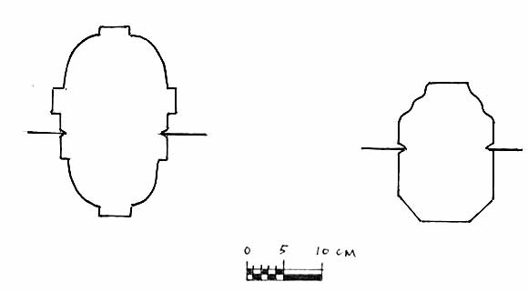
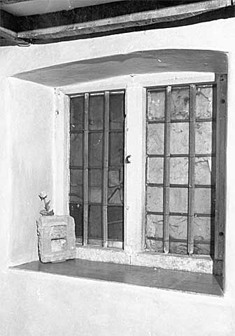
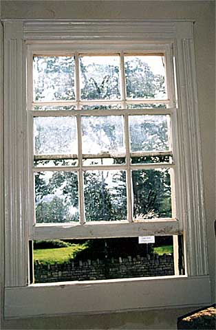
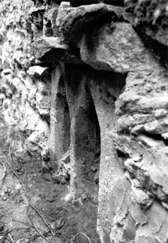

|
|
Windows As becomes a stone village, windows were stone mullioned at least from the 16th to the late 19th centuries under a variety of drip labels - straight, with returns and continuous. The earliest moulding seems to be the ovolo section (16), found in late 16th Century and early 17th Century properties, sometimes with central master mullions. However, the most common moulded mullion is the internal chamfer and the external ogee section. This moulding, made its appearance in Batheaston houses from about 1660 (17). Wooden sash windows, divided into small panes by glazing bars, appear in Batheaston in the 18th Century, although the sashes are mainly set well back from the outside wall faces and glazing bars are relatively slender indicative of late, rather than early, 18th Century work (Cunnington, 1999, pp.157-159). There is evidence of mullions being cut out to be replaced by sash windows or, as a cheaper alternative, the mullions being replaced by wooden casements. In the latter case the original window openings are preserved, wide rather than tall. The normal Georgian window opening is taller than its width (18). In parenthesis, a number of medieval window openings, one with a trefoil head (19), have been identified in Batheaston and district. Some, but maybe not all, appear to be built into properties of a much later date; re-cycling is not a new phenomenon.
 16. Examples of stone mullions from Batheaston. Ovolo (left), late 16th - early 17th centuries. Ogee and chamfer (right), late 17th - mid 18th centuries. Exterior faces are towards the top
 17. A complete mullion window of 1660-1665. Ogee and chamfer section stone work with thin discoloured rectangular panes of glass made up into fixed leaded lights wired onto vertically set oak stanchions
 18. Window from a cottage built about 1820. Six-over-six panes within a reeded wood frame typical of the Regency period  19. A blocked medieval window in the rear wall of a house in the Batch, Batheaston. The house, which is not listed, has not been surveyed |